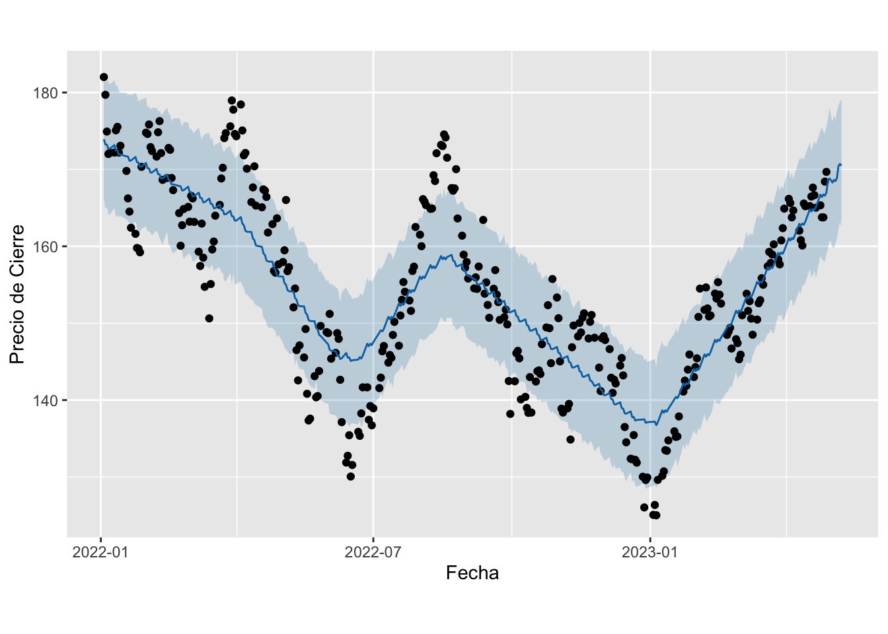

7 Modelo Prophet
Prophet es un procedimiento para pronosticar datos de series temporales basado en un modelo aditivo en el que las tendencias no lineales se ajustan a la estacionalidad anual, semanal y diaria, además de los efectos de las vacaciones. Funciona mejor con series temporales que tienen fuertes efectos estacionales y varias temporadas de datos históricos. Prophet es resistente a los datos faltantes y los cambios en la tendencia, y por lo general maneja bien los valores atípicos.
Este modelo puede ser usado tanto para series univariadas o multivariadas. Con los modelos de series temporales univariadas, la idea es hacer predicciones de valores futuros basadas únicamente en las tendencias y la estacionalidad de los datos pasados de la variable objetivo (la que tratamos de pronosticar) y nada más.
Los modelos multivariantes son una extensión de eso, donde la entrada puede ser múltiples series de tiempo.
Acontinuación observaremos como es el comportamiento de 3 acciones puntuales, “AAPL”, “MSFT”, “AMZN” con el fin de poder tener una mejor visualización. En este caso la idea es probar ajustar un modelo prophet ajustado de forma manual, como por ejemplo escogiendo la tendencia, la temporalidad de la estacionalidad y si es aditiva o multiplicativa. Se comparara con un modelo prophet automatico, es decir ajustado por si mismo. En este momento el ejercicio esta ajustado de forma univariada.
PROPHET AAPL

PROPHET MSFT
PROPHET AMZN
Exploración Inicial
En este caso convertimos el dataframe inicial es un tipo tsibble, con el fin de no utilizar un for para el desarrollo del modelo prophet si no asumir como un key la variable symbol, que nos sugiere la acción para la cual se esta realizando el ejercicio.
stock = subset(precios, select = c("close", "date",'symbol'))
stock <- stock %>%
feasts::as_tsibble(index = date,key = symbol)
stock %>%
ggplot2::autoplot(close, facets = symbols) +
ggplot2::labs(title = "Exploracion Inicial del Precio Cierre", x = "Fecha", y = "Precio Cierre")A continuación procederemos a construir los ajustes de los modelos propuestos inicialmente. Recordar las bondades que tiene el modelo prophet que entre ellas se encuentran el poder ajustar de forma sencilla los parametros asociados a tendencia, estacionalidad, vacaciones, entre otros.
stocks_various = subset(precios, select = c("date","close" ,'symbol'))
stocks_various = feasts::as_tsibble(stocks_various, index = date, key = symbol)
#stocks_various = subset(stocks_various, symbol == 'AAPL')
fit <- stocks_various %>%
fabletools::model(
Prophet = fable.prophet::prophet(close ~ growth("linear") + season("week", type = "additive")),
Prophet_auto = fable.prophet::prophet(close))
fit## # A mable: 3 x 3
## # Key: symbol [3]
## symbol Prophet Prophet_auto
## <chr> <model> <model>
## 1 AAPL <prophet> <prophet>
## 2 AMZN <prophet> <prophet>
## 3 MSFT <prophet> <prophet>Prediccion
Acontinuación se relaciona el pronostico de los siguientes 7 dias.